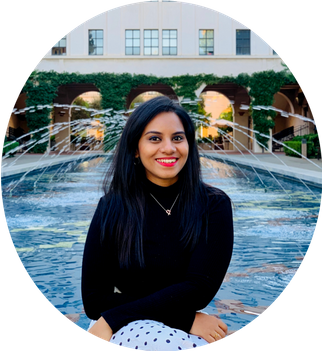
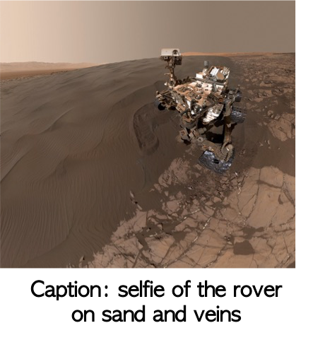
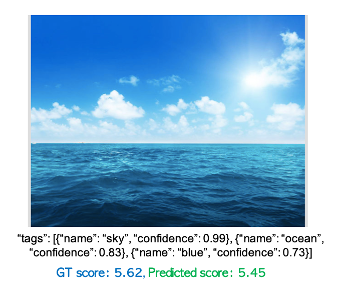

|  |
Hiya Roy PhD student The University of Tokyo Japan hiya.roy at ac.jaxa.jp [GitHub] [Google Scholar] [Resume/CV] [ LinkedIn ] |
My research interests are in computer vision, machine learning, deep learning, and image processing. Currently I am a third year Ph.D. student working with Prof. Tatsuaki Hashimoto, and Prof. Toshihiko Yamasaki at the University of Tokyo. I received my Master's in Electrical Engineering and Information Systems from the University of Tokyo, Japan in 2017 and Bachelor's in Electrical Engineering from Jadavpur University, India in 2012.
Publications
|  |
MAARS: Machine Learning-Based Analytics for Rover Systems Masahiro Ono, Brandon Rothrock, Kyohei Otsu, Shoya Higa, Yumi Iwashita, Annie Didier, Tanvir Islam, Christopher Laporte, Vivian Sun, Kathryn Stack, Jacek Sawoniewicz, Shreyansh Daftry, Virisha Timmaraju, Sami Sahnoune, Chris A. Mattmann, Olivier Lamarre, Sourish Ghosh, Dicong Qiu, Shunichiro Nomura, Hiya Roy, Hemanth Sarabu, Gabrielle Hedrick, Larkin Folsom, Sean Suehr, Hyoshin Park. In IEEE Aerospace conference, 2020. [Paper] |

|
Lunar surface image restoration using U-net based deep neural networks Hiya Roy, Subhajit Chaudhury, Toshihiko Yamasaki, Danielle DeLatte, Makiko Ohtake, Tatsuaki Hashimoto. In Lunar and Planetary Science Conference, 2019. [Paper] [Bibtex] |
|
Predicting Image Aesthetics using Objects in the Scene Hiya Roy,Toshihiko Yamasaki, Tatsuaki Hashimoto. In International Joint Workshop on Multimedia Artworks Analysis and Attractiveness Computing in Multimedia (MMArt and ACM) in conjuction with ICMR 2018. [Paper] [Bibtex] |
|
|  |
Do hashtags help? – Image aesthetics prediction using only hashtags Hiya Roy,Toshihiko Yamasaki, Tatsuaki Hashimoto. In Women in Computer Vision Workshop (WICV), CVPR 2018. [Poster] |

|
Can fully convolutional networks perform well for general image restoration problems? Subhajit Chaudhury, Hiya Roy In International Conference on Machine Vision Applications (MVA), 2017. [Paper] [Poster] |
|
|
Planetary image recognition using deep learning Hiya Roy, Tatsuaki Hashimoto In The 31st International Symposium on Space Technology and Science, ISTS 2017. [Paper] |
Master's Thesis
|
Planetary surface image recognition using deep learning Hiya Roy September 2017 [Thesis] [Slides (396 MB)] |
Awards
Reviewer recognitions, CVPR 2018, NeurIPS 2019Thesis Fast Forward, Best Presentation, SIGGRAPH 2018
Adobe Research Fellowship 2017
Student collaborators/interns
I have had the opportunity to work with some wonderful collaborators.@Adobe
- PhD [interns] Taesung Park, UC Berkeley (Fellowship winner, 2020)
- Masters [interns] Seungjoo Yoo, Korea Univ (WIT scholarship winner, 2019)
- PhD [university collaborators] Pranay Manocha, Princeton
- Undergrad [university collaborators] Sheng-Yu Wang, UC Berkeley
Arnab Ghosh, Oxford
Minyoung (Jacob) Huh, MIT
Tamar Rott Shaham, Technion (Fellowship winner, 2020)
Peiye Zhuang, UIUC
Dima Smirnov, MIT
Noa Fish, Tel Aviv
Rawan Alghofaili, George Mason
Alvin Wan, UC Berkeley
- Undergraduates Xin Qin, now @ USC
Hemang Jangle
Angela S. Lin, now @ UT Austin
Xinyang Geng, now @ UC Berkeley
Tianhe Yu, now @ Stanford
Stefan A. Candra
Graduate Student Instructor (GSI) with Prof. Anca Dragan
Spring 2017
Computer Vision (CS 280), UC Berkeley
Graduate Student Instructor (GSI) with Prof. Alexei A. Efros, Prof. Trevor Darrell
Spring 2016
Introduction to Circuits (ECE 2100), Cornell University
Teaching Assistant (TA) with Prof. Alyosha Molnar
Spring 2010